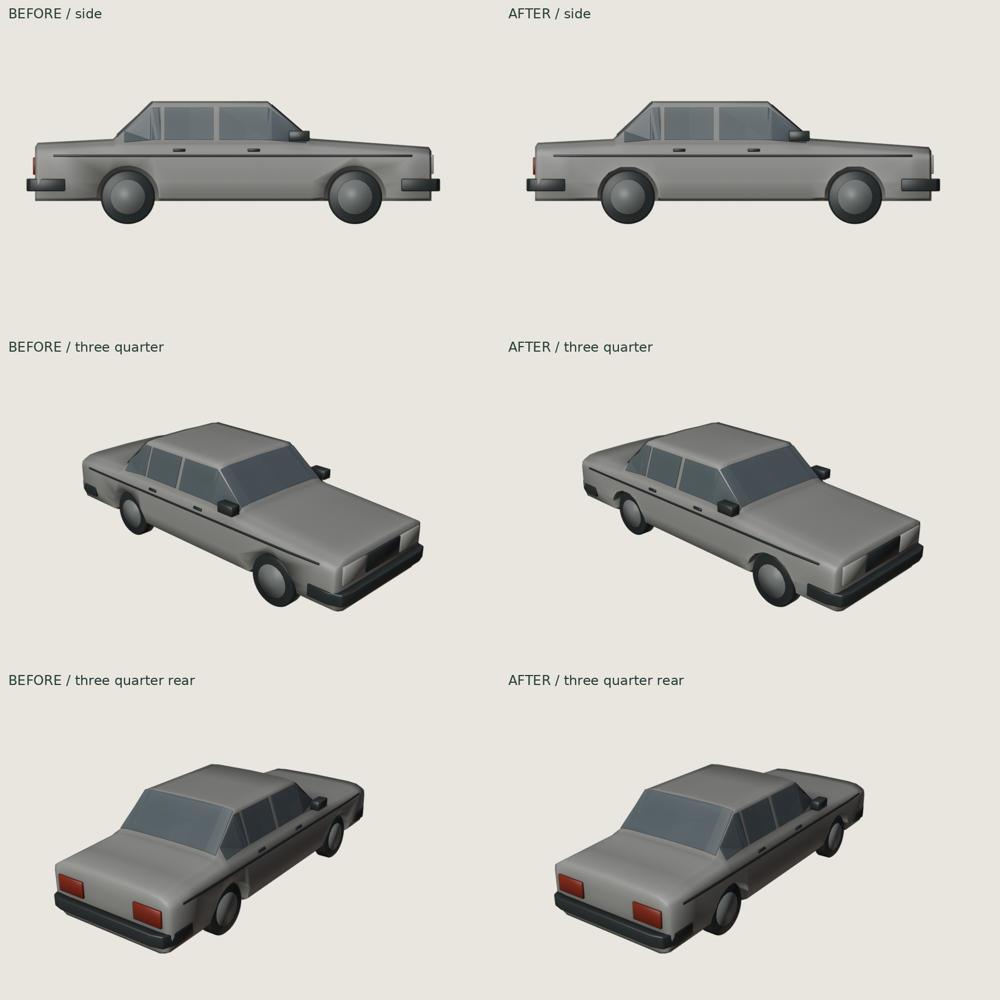
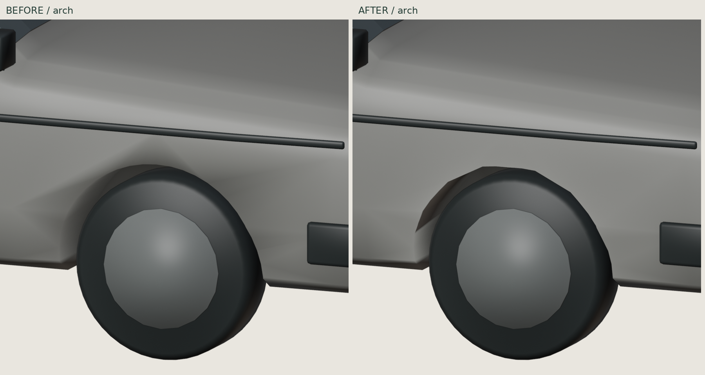
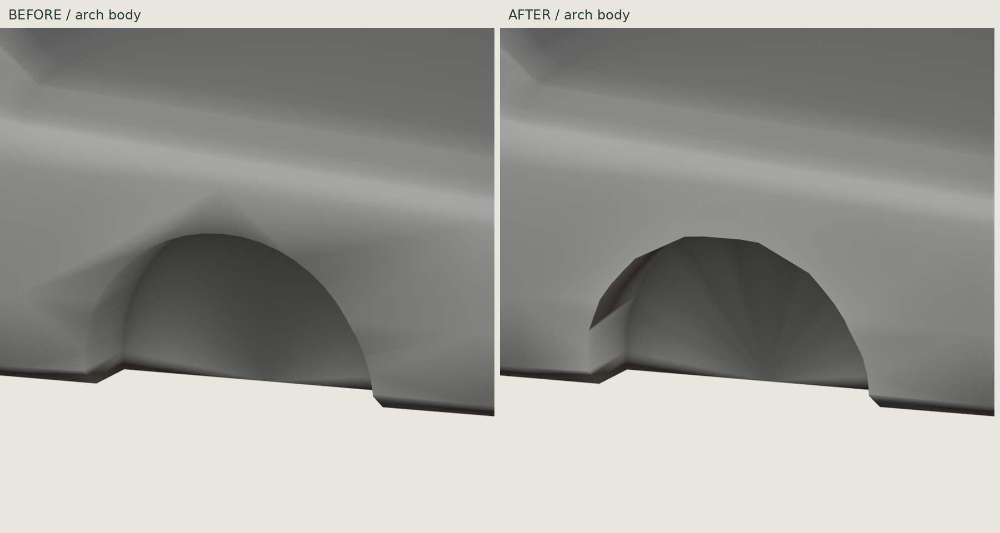

Volvo 240 · defined wheel arches
Targeted refinement of the existing Blender model. Circular openings become controlled polygon profiles with short flat crowns, angular shoulders and straighter lower legs. Connected inner support loops give the opening a tighter reveal. No detached arch trim or new body shell. Panel normals reduce the old inflated shading around each opening; the geometry itself changes.
Same cameras · side, front and rear three-quarter

Front wheel arch · same close-up

Bare body · connected opening geometry

Preservation and checks
6,162 triangles total, 25 mesh objects; body width 1.71 m, overall length 4.82 m, wheelbase 2.65 m. Body bounds match the previous master exactly; all 24 separate components retain identical coordinates, topology and transforms. All 454 protected body vertices outside the well neighbourhood remain. Materials and vehicle identity are retained.
Blender Modeler: 0 errors / 0 warnings. Body: closed, consistent winding, no degenerates or BVH self-intersection candidates. Existing GLB validator, Blender reimport and Three r128 loader pass. Source regeneration reproduces all mesh positions. No game integration or hardware Safari/FPS test. Human visual approval remains pending.
Remaining simplifications: generic grille/mirrors, opaque glass with existing edge artifacts, simple wheel discs and stylized end forms. The arch profile is a deliberate low-poly interpretation, not a factory dimensional reconstruction. Suspension/steering travel is not simulated.
Full-size final PNGs
side
three quarter
three quarter rear